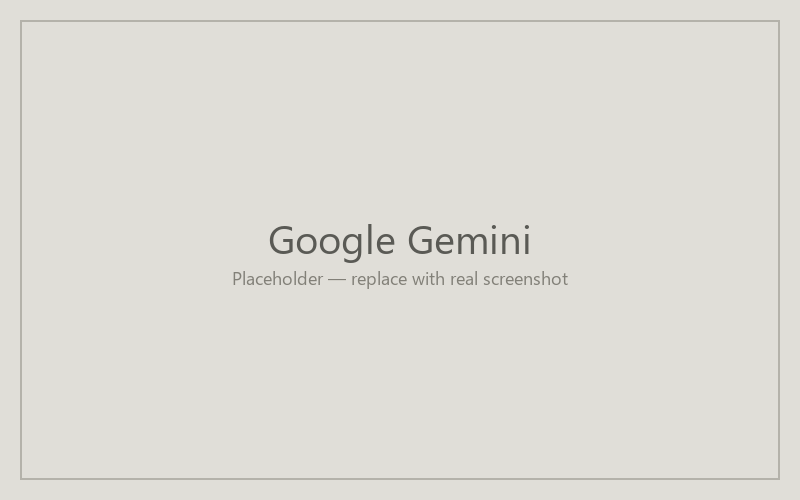

Building agents in Google Gemini
Google Gemini's custom "Gems" let you ship a configured agent with optional file grounding and a long context window. Gems are useful when a recipe needs to hold an entire course's worth of materials in mind. Faculty access depends on whether your Google Workspace tier includes Gemini; sharing constraints are tighter than ChatGPT or Claude.

Find the agent creation entry point
From gemini.google.com, open the left sidebar and look for "Gem manager" (the icon resembles a small diamond). Click it, then click "+ New Gem." If you don't see the option, your account tier doesn't have Gems enabled — Google has been rolling this out unevenly across consumer and Workspace accounts.
Fill in the creation form
The Gem builder shows two key fields: a Name (the recipe's Title) and an Instructions text area (the recipe's Instructions). Paste each in. For Knowledge Base, attach files in the "Knowledge" section — Gemini's large context window means it can hold more than ChatGPT or Claude per upload, but sharing a Gem with attached files is more constrained than the other platforms. Test the Gem in the preview pane before saving.
Save and share your agent
Save the Gem to your library. Sharing options vary by account tier; for some Workspace tiers, you can share within your domain (vt.edu); for consumer accounts, sharing may be limited to copying the configuration text rather than a live link. Confirm the share UI actually produces a working link before assuming the agent is shareable.
| Recipe field | Google Gemini field |
|---|---|
| Title | Name |
| Description | Description |
| Instructions | Instructions |
| Knowledge Base | Knowledge |
| Tools | (not exposed in Gems) |
Last updated: pending.